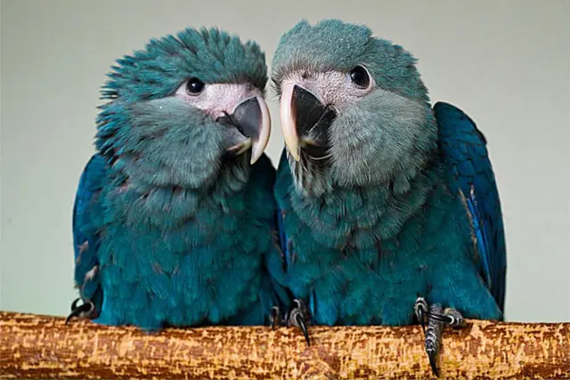
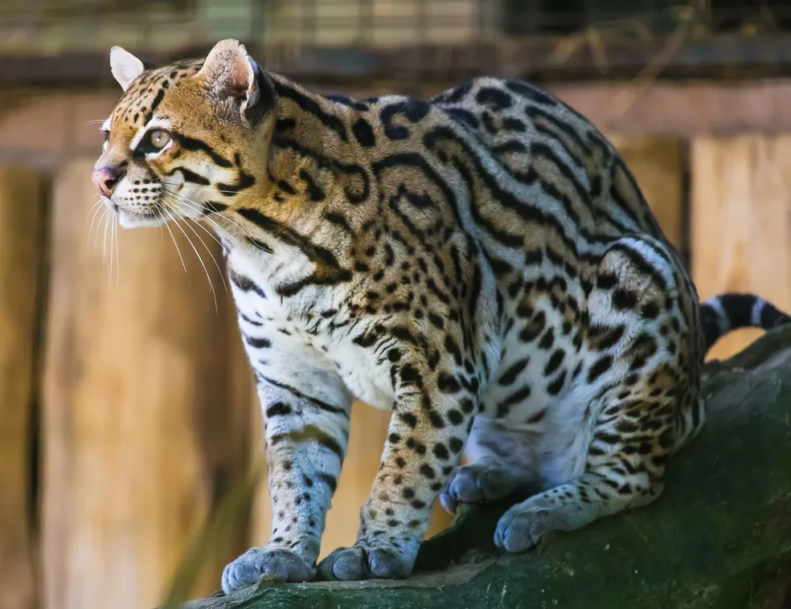
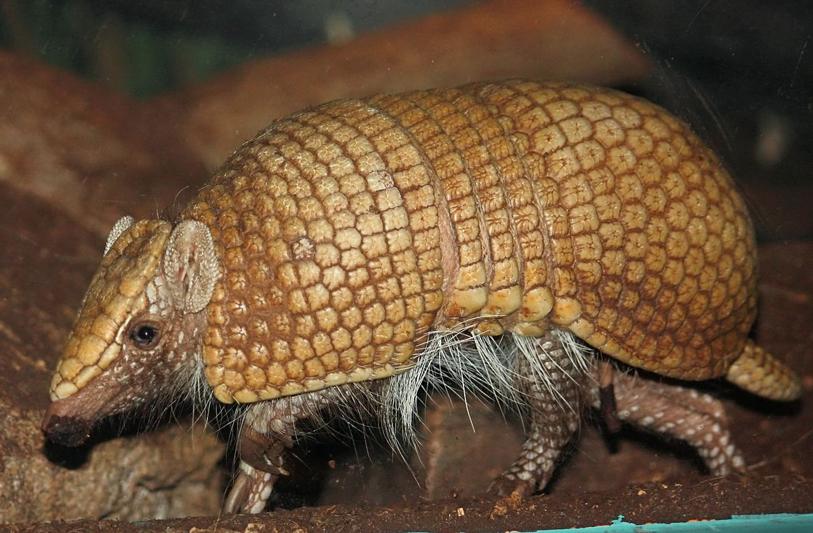
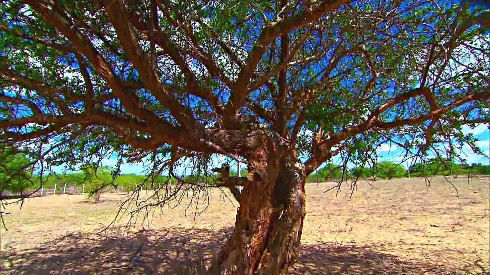
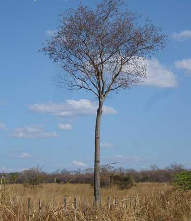
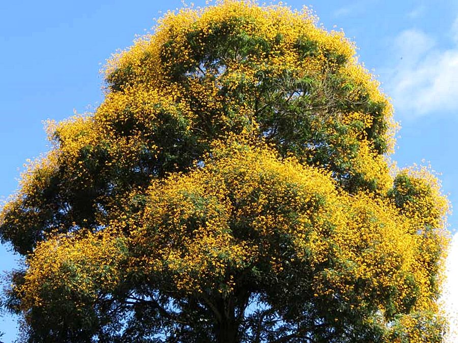
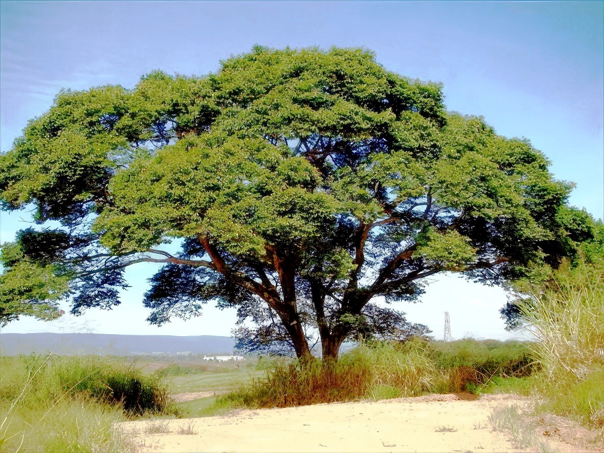

Ararinha Azul
Ave de coloração azul vibrante, extinta na natureza e atualmente reintroduzida.
Saiba Mais

Onça Parda
Grande felino solitário, ameaçado pela caça e perda de habitat.
Saiba Mais

Gato Maracajá
Pequeno felino ágil e noturno, com pelagem manchada.
Saiba Mais

Tatu Bola do Nordeste
Único tatu que se enrola em forma de bola para se proteger.
Saiba Mais

Umburana de Cheiro
Árvore medicinal ameaçada pela exploração da madeira.
Saiba Mais

Aroeira do Sertão
Madeira nobre usada na construção.
Saiba Mais

Brauna
Uma das madeiras mais resistentes, ameaçada pela extração excessiva.
Saiba Mais

Jatobá da Caatinga
Fornece frutos nutritivos, mas sofre com o desmatamento.
Saiba Mais